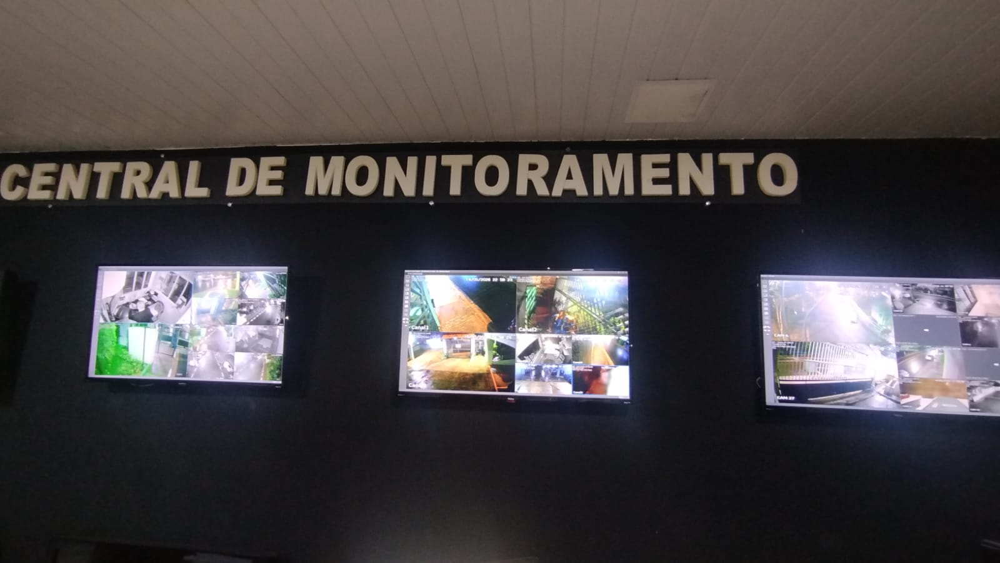
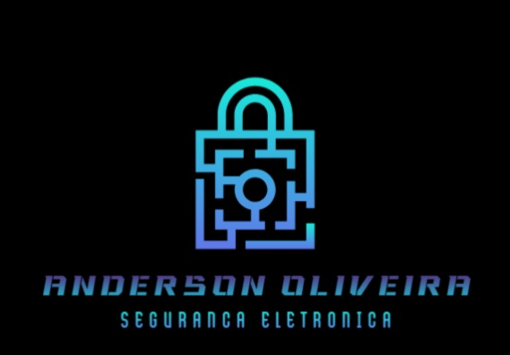

Portfólio

Instalação de sistema CFTV IP em condomínio

Automação de portão com controle remoto inteligente

Implementação de portaria autônoma em edifício comercial

Controle de acesso com leitor facial

Especialista em Segurança Eletrônica & Automação
Com 10 anos de experiência no mercado de segurança e portaria remota em São Paulo, atuo na linha de frente da segurança tecnológica para pequenas, médias e grandes empresas e condomínios.
Meu foco é transformar a segurança tradicional em sistemas inteligentes, integrados e de alta performance.

Instalação de sistema CFTV IP em condomínio
Automação de portão com controle remoto inteligente
Implementação de portaria autônoma em edifício comercial
Controle de acesso com leitor facial
Email: seuemail@exemplo.com
Whatsapp: (99)99999-9999